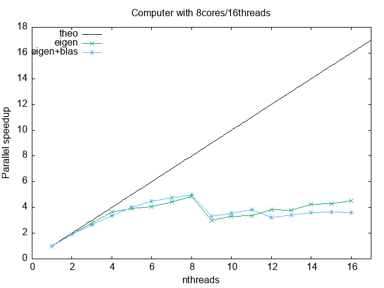
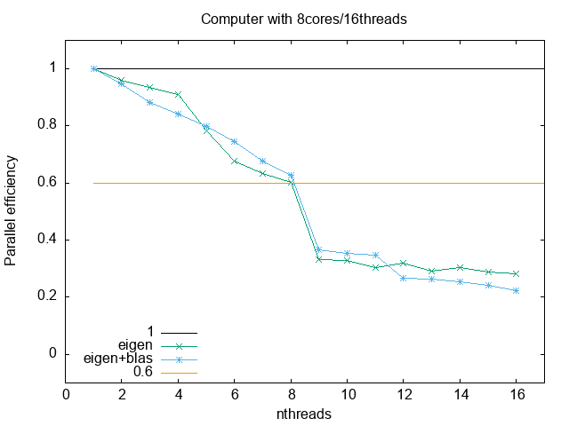
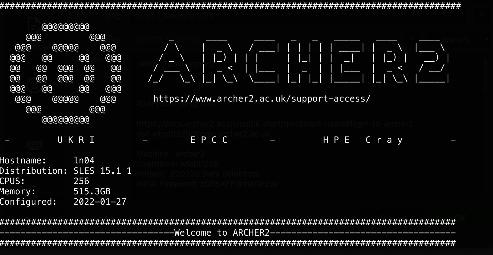
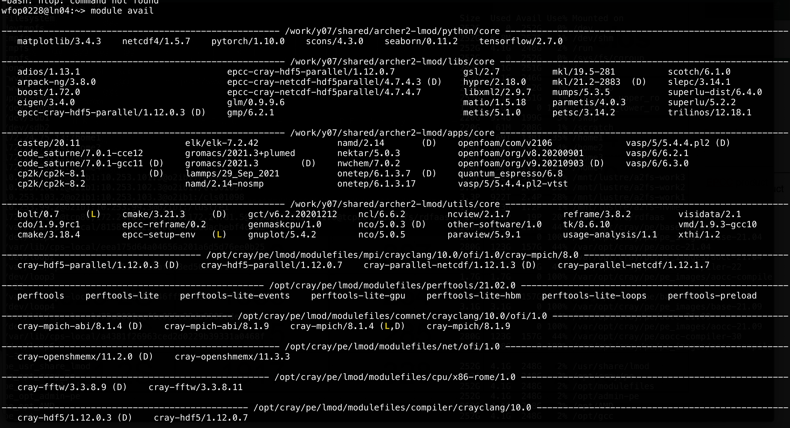
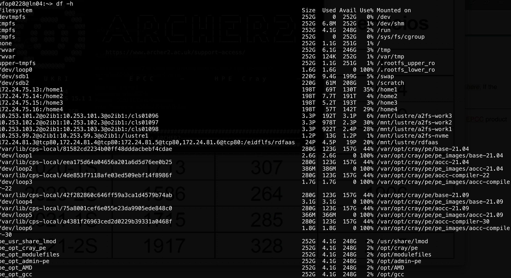

13. Introduction to High Performance Computing#
Courses
High-Performance Computing Technologies Course: https://www.hpc.temple.edu/mhpc/hpc-technology/
What to do aout parallel prograaming: https://news.ycombinator.com/item?id=36318280
Resources
https://www.archer.ac.uk/training/courses/index.php#hands_on_intro
https://www.sdsc.edu/services/service_rates_summary.html
Containers in HPC
https://apptainer.org/docs/user/main/docker_and_oci.html
Debuggers
EPCC PRACE Training
https://www.archer2.ac.uk/training/courses/211202-package-users/#materials
https://www.archer2.ac.uk/training/courses/210000-openmp-self-service/
https://www.archer2.ac.uk/training/courses/210000-mpi-self-service/
Youtube video list: https://www.youtube.com/watch?v=_h55hwpLwoE&list=PLD0xgZGaUd1IV8VgXb1ggOLkEv19JmZiP
Reference Materials
See presentations hpc-intro.pdf, 07-HPC-Distributed.pdf and
07-Parallel-general-metrics.pdf . Special care to metrics.
13.1. Introduction#
There is a point where a serial version of our code is not the most optimal way to exploit our computational resources (but it might be in the case of embarrassingly parallel problems where you can just run several programs at once). For instance, you might want to use all the cores on your multicore system, ideally reducing the execution time, or you need to explore larger system sizes that could consume a lot of memory or need too much time.
Typically, Moore’s law allowed to wait for a bit in order to get a better machine so your algorithms will run faster.
https://ourworldindata.org/uploads/2020/11/Transistor-Count-over-time.png
{kind=link}
But due to physics limitation and power considerations, it is now typical to have multicore systems
https://www.youtube.com/watch?v=Qlv5pB6u534 (The physics ending moore laws)
https://i.stack.imgur.com/fRJgk.png
{kind=link}
Recently, power considerations are being more and more relevant:
https://en.wikipedia.org/wiki/Performance_per_watt?useskin=vector
-
https://i.extremetech.com/imagery/content-types/07CyoCCWMzGjurj8zpuiYO4/images-2.jpg
{kind=link}
At the same time, the computational problems size and/or complexity has been steadily increasing in time, requiring distributed computing techniques.
{kind=link}
(see also https://en.wikipedia.org/wiki/Flynn’s_taxonomy?useskin=vector). Recently, besides CPU parallelization, the GPU parallelization has become very relevant (see https://en.wikipedia.org/wiki/General-purpose_computing_on_graphics_processing_units?useskin=vector ), where CUDA , OpenACC, and others, are the relevant technologies.
In our case, we will be more focused on the cluster computing aspect, while there are more HPC approaches, like grid computing, cloud computing, and so on. One of the goals of HPC is to get better results faster and/or to exploit better current or future resources.
{kind=link}
13.2. Basics of parallel metrics#
But, as usual, you should always measure. All programs have a serial part that cannot be parallelized and a parallel part than can. Using more processors/threads can reduce only the parallel, so a 100% serial program cannot really take advantage of a parallel system. This is known as Amdahls law, https://en.wikipedia.org/wiki/Amdahl’s_law?useskin=vector
https://upload.wikimedia.org/wikipedia/commons/e/ea/AmdahlsLaw.svg
{kind=link}
At the end, the user must also gauge its application performance. Blindly reserve of HPC resources represent a non efficient cluster use, and higher costs. In this regard, parallel metrics are really crucial. The next to figures show the speedup and the parallel efficiency. As you can see, they are limited by the hardware (and algorithms)
Speedup: 
Parallel efficiency: 
Rooftop model:
13.3. Practical overview of a cluster resources and use#
There are many aspects to take into account in the HPC field. If you are
a user, you should know abount the type of parallelization (shared
memory, disitributed memory, gpu programming), the type of hardware you
are using, the resource manager, the data storage and so on. The goal of
a system administrator is to make that easier, but that is not always
possible. Check the 12-12-hkhlr_quick_reference-goethe-hlr (from
https://csc.uni-frankfurt.de/wiki/doku.php?id=public:start) for an
example of a typical cluster config and offerings.
These are examples from the Archer cluster at https://www.archer2.ac.uk/

 In the following, we will see some basic examples for HPC, such us
Shared memory: with openmp
Distributed memory: using mpi
Multiple processes: using gnu parallel
C++ threads
TODO C++ parallel algorithms
Video: Introduction to shared and distributed memory: https://math-gpt.org/video/hls_4e3c1ffe-ee8e-49fb-a62d-a10615c0483d
Video: Introduction to gpu programming with cuda: https://math-gpt.org/video/hls_a9482f1a-7013-423e-ae0e-d4fd83edf997
13.4. Openmp, shared memory#
In the share memory paradigm, threads (lighweight processes without their own context) share or can “see” the same memory:


Here, a main process creates/destriys threads as needed

The following code shows a very simple parallelization using openmp, which allows tu share memory and run on several threads.
#include <iostream>
#include <omp.h>
int main(int argc, char *argv[]) {
std::cout << "BEFORE\n";
#pragma omp parallel
{
std::cout << "Hola mundo\n";
}
std::cout << "AFTER\n";
return 0;
}
To activate multi-threading, compile it as
g++ -fopenmp codes/openmp.cpp
To run it, you can control the number of threads using the environment
variable OMP_NUM_THREADS:
g++ -fopenmp codes/openmp.cpp
echo "Running with 2 threads"
OMP_NUM_THREADS=2 ./a.out
echo "Running with 4 threads"
OMP_NUM_THREADS=4 ./a.out
13.4.1. Exercises#
Modify the previous exercise to identify the thread which is printing. Find a function to get the “thread id”.
Besides the thread id, print the number of threads and the hostname. Print the number of threads outside the parallel region. Does that make sense?
13.5. MPI, distributed memory#
MPI, the Message Passing Interface, is a library API that allows process to interchange data in a distributed memory context. It is more comple that openmp, but also opens the door to a greater scale since we can use many computers, increasing both our computational power and memory capacity (if done correctly and efficiently). See: https://www.mpi-forum.org/docs/


The following shows the basic structure of a MPI program. It creates several processes that can communicate with each other, and can be run in multiple machines (for an introduction, see: https://mpitutorial.com/tutorials/mpi-introduction/)
#include <mpi.h>
#include <iostream>
int main(int argc, char** argv)
{
// Initialize the MPI environment
MPI_Init(&argc, &argv);
// Get the number of processes
int np;
MPI_Comm_size(MPI_COMM_WORLD, &np);
// Get the rank of the process
int pid;
MPI_Comm_rank(MPI_COMM_WORLD, &pid);
// Get the name of the processor
char processor_name[MPI_MAX_PROCESSOR_NAME];
int name_len;
MPI_Get_processor_name(processor_name, &name_len);
// Print off a hello world message
printf("Hello world from processor %s, rank %d out of %d processes\n",
processor_name, pid, np);
// Finalize the MPI environment.
MPI_Finalize();
}
You can compile it as
mpic++ mpi.cpp
(If you want to see all the flags, use mpic++ --showme)
And now run it as
mpirun -np 4 ./a.out
You can also specifiy different machines to run on, but you will need to
have configured passwordless access to those machines. Or better, use slurm .
13.5.1. Exercises#
Run on two nodes the same process
Interchange some message between the two nodes: use MPI_Send and MPI_Recv.
13.6. Parallelism in python#
Also :
13.7. Threads from c++11#
The c++11 standard included, among many other usefull things, the use
a thread. A thread is a lightweight process that can be launched in
parallel with other threads from a parent process. In the following we
will see some very simple examples since at the end we will focus mainly
on OpenMP (where threads are the key and the memory is shared) and MPI
(where processes are the basic unit and memory is distributed).
The following example are based on
The following example shows how to create a thread from a given process, and its output:
#include <iostream>
#include <thread>
void func(int x);
int main(int argc, char **argv) {
std::thread th1(&func, 100);
std::thread th2(&func, 200);
th1.join();
std::cout << "Outside thread" << std::endl;
th2.join();
return 0;
}
void func(int x) {
std::cout << "Inside thread " << x << std::endl;
std::thread::id this_id = std::this_thread::get_id();
std::cout << "This is thread_id: " << this_id << std::endl;
}
Compile it as
g++ -std=c++11 thread-v1.cpp
The folowwing is an example of the output:
Inside |
thread |
Inside |
thread |
100200 |
||
This |
is |
threadid: |
This |
is |
threadid: |
0x700003c34000 |
0x700003cb7000 |
||||||
Outside |
thread |
Run it several times, you will obtain different outputs, many times they will be mangled. Why? because the threads are running in parallel and their output is not independent of each other, not synced.
To check that we are really running two threads, let’s increase the
computational effort inside function func and then, while the program
is running, use top or htop to check what is running on your computer.
Notice that the cpu use percentage is around 200%:
#include <iostream>
#include <thread>
#include <chrono>
#include <cmath>
void func(double x, int nsecs);
int main(int argc, char **argv) {
const int secs = std::atoi(argv[1]);
std::thread th1(&func, 100, secs);
std::thread th2(&func, 200, secs);
std::thread th3(&func, 300, secs);
th1.join();
std::cout << "Outside thread" << std::endl;
th2.join();
th3.join();
return 0;
}
void func(double x, int nsecs) {
std::cout << "Inside thread " << x << std::endl;
std::this_thread::sleep_for (std::chrono::seconds(nsecs)); // make this sleep, does not consume a lot of resources
for (int ii = 0; ii < 100000000; ++ii) {
x += std::fabs(x*std::sin(x) + std::sqrt(x)/3.4455)/(ii+1);
}
std::cout << "Getting out of thread " << x << std::endl;
}
The following is an example of the output:
Inside |
thread |
Inside |
thread |
100 |
200 |
||||
Getting |
out |
of |
thread |
9387820000.0 |
Outside |
thread |
|||
Getting |
out |
of |
thread |
18849600000.0 |
To synchronize threads, you can use a mutex. This is useful in case you need to sort out the printing, or, more importantly, to syncrhonize a writing operation on some common variable. The following is a simple example:
#include <iostream>
#include <thread>
#include <chrono>
#include <mutex>
std::mutex g_display_mutex;
void foo()
{
std::thread::id this_id = std::this_thread::get_id();
g_display_mutex.lock();
std::cout << "thread " << this_id << " sleeping...\n";
g_display_mutex.unlock();
std::this_thread::sleep_for(std::chrono::seconds(1));
}
int main()
{
std::thread t1(foo);
std::thread t2(foo);
t1.join();
t2.join();
return 0;
}
thread |
0x70000709a000 |
sleeping… |
thread |
0x70000711d000 |
sleeping… |
Repeat several times. Although the thread id will change, the output will not be mangled.
There is much more about threads, but since our focus will turn to OpenMP, we will stop here. For more info check https://en.cppreference.com/w/cpp/thread/thread
13.7.1. Exercise#
Fix the following code, which has a race condition, using a mutex (ref: https://www.classes.cs.uchicago.edu/archive/2013/spring/12300-1/labs/lab6/) :
#include <iostream>
#include <vector>
#include <thread>
void square(const int x, int & result);
int main() {
int accum = 0;
std::vector<std::thread> ths;
for (int i = 1; i <= 20; i++) {
ths.push_back(std::thread(&square, i, std::ref(accum)));
}
for (auto & th : ths) {
th.join();
}
std::cout << "accum = " << accum << std::endl;
return 0;
}
void square(int x, int &result) {
result += x * x;
}
accum = 2870
The correct answer is 2870, but if you repeat the execution many times
you will find different results. For instance, repeating the execution
1000 times and checking for the unique answers one gets
for i in {1..1000}; do ./a.out; done | sort | uniq -c
2 accum = 2509
1 accum = 2674
2 accum = 2749
1 accum = 2806
1 accum = 2834
4 accum = 2845
1 accum = 2854
1 accum = 2861
2 accum = 2866
6 accum = 2869
979 accum = 2870
which shows that it not always yield 2870 .
13.8. Parallel algorithms in c++#
Since c++17, it is possible to execute some stl algorithms in parallel
(shared memory), without explictly using threads. See:
This a simple example for performing a sum
#include <iostream>
#include <algorithm>
#include <numeric>
#include <vector>
#include <execution>
int main() {
const long ARRAY_SIZE = 100000000;
std::vector<double> myArray(ARRAY_SIZE);
std::iota(myArray.begin(), myArray.end(), 0); // fill array with 0, 1, 2, ..., ARRAY_SIZE-1
// sequential execution
auto sum_seq = std::accumulate(myArray.begin(), myArray.end(), 0.0);
std::cout << "Sequential sum: " << sum_seq << std::endl;
// parallel execution
auto sum_par = std::reduce(std::execution::par, myArray.begin(), myArray.end());
std::cout << "Parallel sum: " << sum_par << std::endl;
return 0;
}
To compile, use
g++ -std=c++17 par.cpp -ltbb
This is linking with an intel threads implementation.
You can of course measure how much time is spent on each part. To do so, we will use chrono:
Implementation 1:
#include <iostream>
#include <algorithm>
#include <numeric>
#include <vector>
#include <execution>
int main() {
const long ARRAY_SIZE = 100000000;
std::vector<double> myArray(ARRAY_SIZE);
std::iota(myArray.begin(), myArray.end(), 0); // fill array with 0, 1, 2, ..., ARRAY_SIZE-1
// sequential execution
auto start_time = std::chrono::high_resolution_clock::now();
auto sum_seq = std::accumulate(myArray.begin(), myArray.end(), 0.0);
auto end_time = std::chrono::high_resolution_clock::now();
auto seq_duration = std::chrono::duration_cast<std::chrono::milliseconds>(end_time - start_time);
std::cout << "Sequential sum: " << sum_seq << "( took : " << seq_duration.count()/1000.0 << " s)" << std::endl;
// parallel execution
start_time = std::chrono::high_resolution_clock::now();
auto sum_par = std::reduce(std::execution::par, myArray.begin(), myArray.end());
end_time = std::chrono::high_resolution_clock::now();
seq_duration = std::chrono::duration_cast<std::chrono::milliseconds>(end_time - start_time);
std::cout << "Parallel sum: " << sum_par << "( took : " << seq_duration.count()/1000.0 << " s)" << std::endl;
return 0;
}
Implementation 2:
#include <iostream>
#include <algorithm>
#include <numeric>
#include <vector>
#include <execution>
#include <chrono>
template<typename Func>
void time_function(Func func);
int main() {
const long ARRAY_SIZE = 100000000;
std::vector<double> myArray(ARRAY_SIZE);
std::iota(myArray.begin(), myArray.end(), 0); // fill array with 0, 1, 2, ..., ARRAY_SIZE-1
// sequential execution
auto serial = [&myArray](){return std::accumulate(myArray.begin(), myArray.end(), 0.0);};
time_function(serial);
// parallel execution
auto parallel = [&myArray](){return std::reduce(std::execution::par, myArray.begin(), myArray.end());};
time_function(parallel);
return 0;
}
template<typename Func>
void time_function(Func func) {
auto start = std::chrono::high_resolution_clock::now();
func();
auto end = std::chrono::high_resolution_clock::now();
auto duration_ms = std::chrono::duration_cast<std::chrono::milliseconds>(end - start).count();
std::cout << "Elapsed time: " << duration_ms/1000.0 << " s" << std::endl;
}
The standard does not specify a way to control the nuber tof threads. If you want to do so, and you are using Intel Threads Block implementation, you can add gthe following header
#include <tbb/task_scheduler_init.h>
and then , at some point, specify the thread total (in this case, 4)
tbb::task_scheduler_init init(4);
To learn more about the parallel algs, check
13.9. Gpu Programming#
13.9.1. CUDA: Nvidia#


13.9.2. AMD: Rocm#
https://rocm.docs.amd.com/projects/HIP/en/latest/understand/programming_model.html


13.9.3. Others#
OpenACC, OpenMP, …